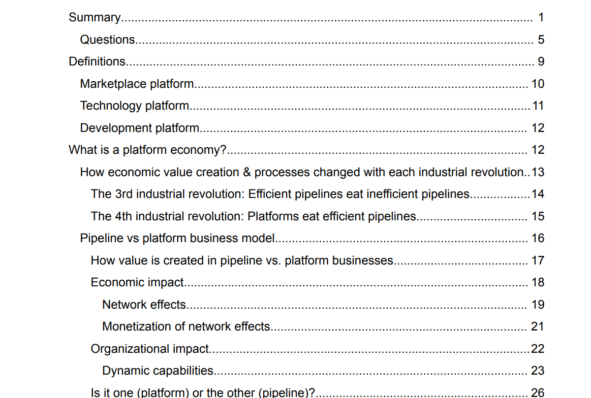
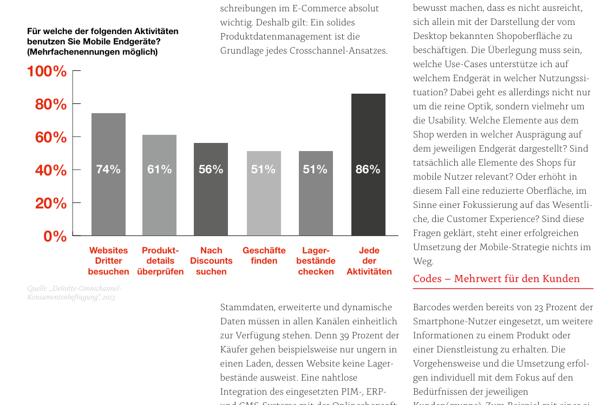
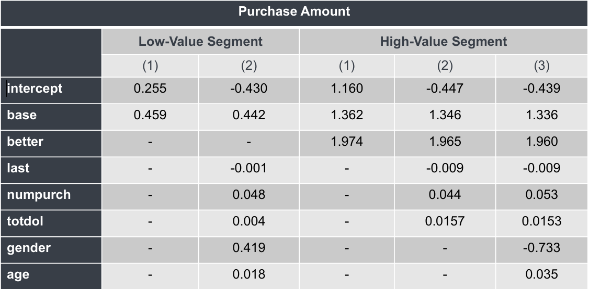
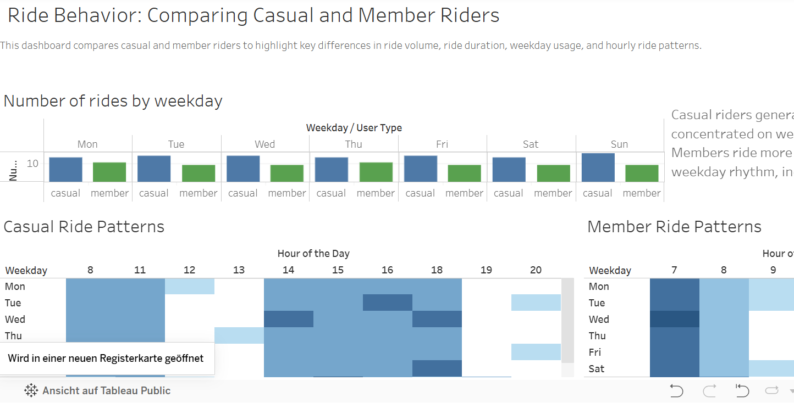

Projects
All projects on this page use either publicly available, synthetic, or fully anonymized data. Any internal information has been removed or masked to ensure confidentiality while still demonstrating my analytical approach and problem‑solving methods.

Understanding Platform Economy Fundamentals
A reference document synthesizing publicly available platform-economy concepts to help teams understand the shift from pipeline to platform business models. All internal information was removed.

Content Writing: Industry Whitepapers
Two whitepapers written for B2B audiences in the technology and e‑commerce sectors. Both pieces explain complex industry topics — including multilingual customer communication, machine translation, digital transformation, and cross‑channel commerce. 📎 View Machine Translation Whitepaper (German) 📎 View Cross‑Channel Commerce Whitepaper (German)
Amplitude Dashboard for Community Teams
Amplitude dashboard created as part of an internal analytics enablement initiative. It introduces community marketers, community managers, and community‑as‑a‑product teams to essential visibility and interaction metrics.
📎 View Project Result

Optimizing Coupon Strategy for High-Value Customers
This project was completed as part of the A/B Testing and Analytics programme. All data and presentation templates were provided by eCornell, so the results follow the required academic format.
📎 View Project ResultRide Behaviour Dashboard
A Tableau Public dashboard created as part of the Google Business Intelligence Certificate programme. It visualises key differences between casual and member riders, focusing on ride volume, duration, weekday patterns, and hourly usage.
📎 View Project Result
Contact
Let's get in touch:
- Email: ilonakromer52@gmail.com
- LinkedIn: Ilona Kromer
- Phone: +43 681 8486 9135
- Address: Grüne Insel 25, 8680 Mürzzuschlag, Austria
Based in Austria and fully remote, with extensive experience collaborating across time zones and distributed teams.